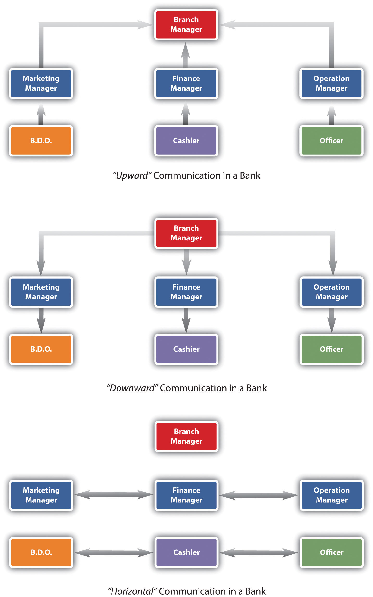
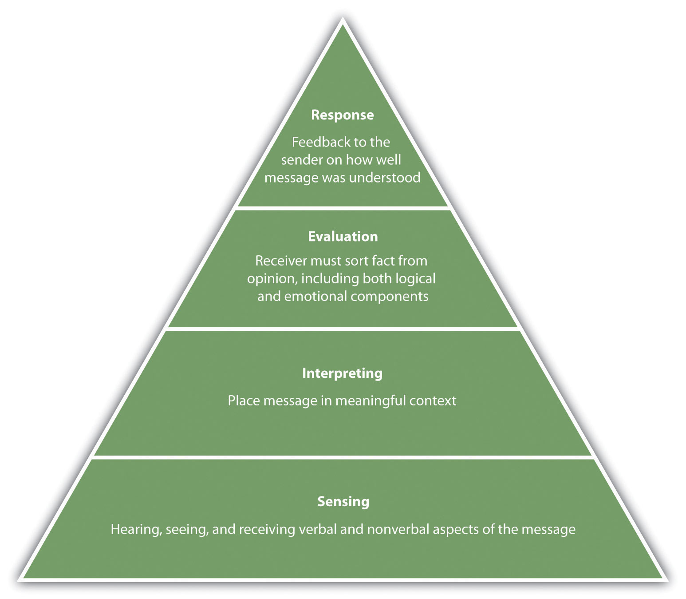
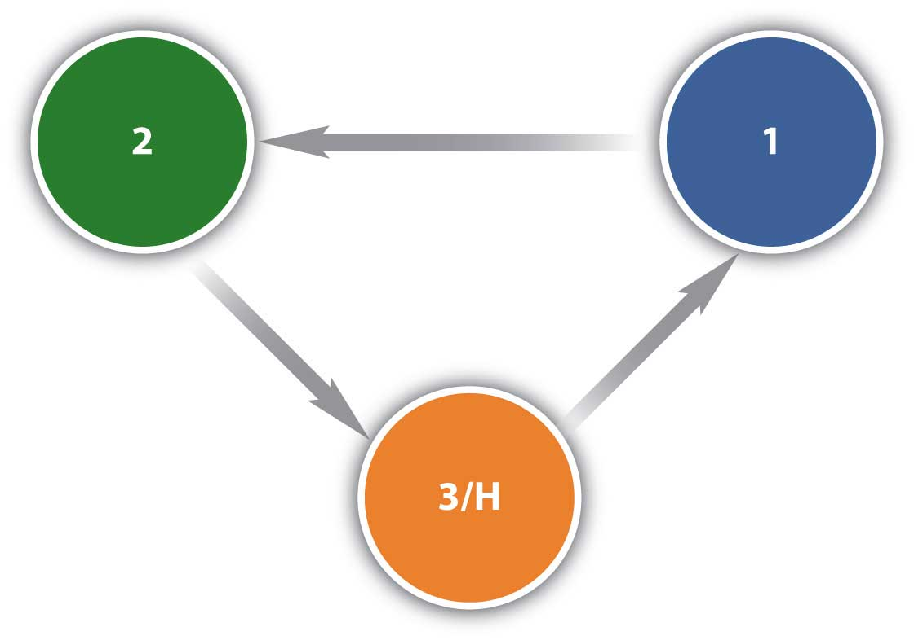

Significant portions of this chapter were adapted from [citation redacted per publisher request] with permission of the author.
[citation redacted per publisher request].The most important thing in communication is hearing what isn’t said.
Peter F. Drucker
Electric communication will never be a substitute for the face of someone who with their soul encourages another person to be brave and true.
Charles Dickens
Improving Communication
When you walked into work this morning, you said your normal "good mornings" and everyone cheerfully said good morning back to you but one coworker. This is a coworker you have had problems with for quite some time.
The problems seem to stem from your two different styles of communication. You like to be quick and to the point, so you find yourself e-mailing a lot. Your coworker, Nanci, prefers to have every conversation in person. You feel that while talking in person is nice, it can also be difficult since everyone has such a hectic schedule. Your workstyle is focused on saving time and using time as wisely as possible. For example, Nanci asked you to give her a client's e-mail address. You copied and pasted it from an earlier e-mail and e-mailed it to Nanci. Nanci got very upset at this and commented about your need to always e-mail things instead of talking in person. You told her it was easier to do it that way, plus it prevented the chance that you would write the address down wrong. Nanci did not accept this response.
In another example, Nanci stopped by your office to ask about your willingness to help set up for the company holiday party. Nanci starting talking with you about the decorations and you interrupted and told her you would be happy to do so and asked her what time you should be there. Nanci again got upset and told you she had no idea. Her body language showed frustration and you couldn't understand why, as you were only asking a reasonable question about timing.
Finally, you decide to talk with your supervisor about these issues. The supervisor gives you some information that was hard to take but also very valuable in the development of a good communication style. "Andree," she said, "while people in the office really like you, they don't find you very warm. People say that your facial expressions and the fact you don't smile very often makes you difficult to approach. To make matters worse, your one- and two-line e-mail responses are sometimes off-putting."
In your defense, you say that you are very busy and often don't have time to answer an e-mail with another line. You also say that you are there to work, not to make friends.
"Yes, this is true," says your supervisor, "but it is important to establish good relationships, which is something you have not seemed to make an effort to do. Good relationships happen with good communication."
As you leave, you understand that you will need to improve on this area. The first thing you do is stop by Nanci's office to hear about the decorations she wanted to tell you about for the company party. You feel this is a good start to creating better communication between her and your other coworkers.
Communication, as you see in our opening scenario, is key to any successful career. While communication is likely discussed in several of your other classes, it should also be addressed in an human relations book, since much of what we do at work is based on effective communication.
How many times do miscommunications happen on a daily basis, either in your personal life or at your job? The good news is that we can all get better at communication. The first thing we need to do is learn how we can better communicate with others. Then we will want to look at our own communication style and compare that with other styles. Have you ever spoken with someone you just didn’t “get”? It is probably because you have different communication styles. Body language is also a key contributor to communication; in fact, as was suggested in the late 1960s by researcher Albert Mehrabian, body language makes up 93 percent of our communication.Mehrabian, A., & Ferris, S. R. (1967). Inference of attitudes from nonverbal communication in two channels, Journal of Consulting Psychology 31(3): 248–58.
One of the most important aspects to good communication is emotional intelligence (EI). Emotional intelligenceThe ability to know and manage our emotions, motivate ourselves, understand others’ emotions, and manage relationships., as we discussed in Chapter 2 "Achieve Personal Success" is the ability to know and manage our emotions, motivate ourselves, understand others’ emotions, and manage relationships. Without EI, it would be impossible to effectively communicate with people.
In addition to the communication that occurs within organizations, each of us has our own individual communication style. Many organizations give tests that may indicate their candidate’s preferred style, providing information on the best job fit.
As you already know, communication in companies is key to having a successful organization. Of course, learning how to communicate better, as a result, is the cornerstone of a successful career. Likewise, understanding how companies communicate with employees can result in employees who are more loyal and motivated.
Those that don’t communicate well, though, see increased turnover, absenteeism, dissatisfied customers, higher product defect rates, lack of focus on business objectives, and lack of innovation.Business Performance. (n.d.). Effective communication in the workplace, accessed July 19, 2010, http://www.businessperform.com/workplace-communication/workplace_communication.html.
Four main types of communications occur within a company: upward communication, downward communication, diagonal communication, and horizontal communication. Each type of communication can serve a different purpose in human resources, and many messages may be sent in a variety of ways.
Upward communicationWhen the lower levels of an organization communicate with the upper levels of an organization. is when the lower levels of an organization communicate with the upper levels of an organization. Some examples might be an employee satisfaction survey using online survey tools such as SurveyMonkey. These kinds of tools can be used to determine the changes that should occur in a company. Oftentimes human resource departments may develop a survey such as this to find out how satisfied the employees are with things such as benefits. Then the organization can make changes based on the satisfaction level of the employees. Employees might also engage in upward communication in a given work situation. They might tell their manager their plate is full and they can’t take on any new projects. This is considered upward communication, too.
Downward communicationThe opposite of upward communication, in that the communication occurs from the upper levels of an organization down to the lower levels of the organization. is the opposite of upward communication, in that the communication occurs from the upper levels of an organization down to the lower levels of the organization. A manager explaining how to do a task to an employee would be considered downward communication. Development of training programs to communicate safety in the organization might be another example. A change in a pay or bonus structure would be communicated using the downward approach as well.
Figure 4.1 Types of Communication Flow in Organizations
A diagonal communicationInterdepartmental communication occurring at various levels of the organization. approach occurs when interdepartmental communication occurs with people at different levels of the organization. When the human resources assistant speaks with the marketing manager about the hiring of a new employee in marketing, this would be considered diagonal communication.
Horizontal communicationWhen people at the same level in the organization communicate. occurs when people of the same level in an organization—for example, a marketing manager and a human resource manager, communicate usually to coordinate work between departments. An accounting manager might share information with a production manager so the production manager knows how much budget they have left.
Within all the communication methods we discussed, there are a variety of approaches. Of course, the most obvious is the informal communication that occurs. An e-mail may be sent or a phone call made. Meetings are another way to communicate information. Companies can also use more formal means to communicate. A blog would be an example. Many companies use blogs to communicate information such as financial numbers, changes to policy, and other “state of the business” information. This type of information is often downward communication. However, blogs are not just for upper management anymore. Companies are using microblogs more and more to ensure that people in various departments stay connected with each other, especially when tasks tend to be very interdependent.
Companies also use social networking sites to keep in touch, such as Twitter and Facebook. For example, Alcatel-Lucent, a 77,000-employee telecommunications company in Europe, found that using social media keeps a large number of employees connected and tends to be a low or no-cost method of communicating. Rather than sending e-mail to their employees telling them to expect updates via these methods, the news is spread via word of mouth as most of the employees blog or use Facebook or other social media to communicate. In fact, Alcatel-Lucent has over eight hundred groups in its system, ranging from business related to ones social in nature.Gaudin, S. (n.d.). Alcatel-Lucent gets social with company communication. Computerworld, accessed July 19, 2010, http://www.computerworld.com/s/article/9179169/Alcatel_Lucent_gets_social_with_company_communication?taxonomyId=209&page Number=3. Use of this type of technology can result in upward, downward, horizontal, and diagonal communication all at once.
Companies also use intranets to communicate information to their employees. An intranet is an internal website, meaning that others generally cannot log in and see information there. The intranet may include information on pay and vacation time as well as recent happenings, awards, and achievements. No matter how the company chooses to communicate with you, understanding these variety of methods can help make you a better employee. Now that we have discussed communication from the company perspective, we should discuss communication from the personal perspective.
In addition to the communication that occurs within organizations, each of us has our own individual communication style. Many organizations give tests that may indicate their candidate’s preferred style, providing information on the best job fit.
Our communication styles can determine how well we communicate with others, how well we are understood, and even how well we get along with others. As you can imagine, our personality types and our communication styles are very similar. Keep in mind, though, that no one person is “always” one style. We can change our style depending on the situation. The more we can understand our own dominant communication style and pinpoint the styles of others, the better we can communicate. The styles are expresser, driver, relater, and analytical. Let’s discuss each of these styles next.
People with an expresser communication styleA communication style that is easily excitable and relies heavily on hunches and feelings. tend to get excited. They like challenges and rely heavily on hunches and feelings. Depending on the type of business, this can be a downfall as sometimes hard data should be used for decision-making purposes. These people are easily recognized because they don’t like too many facts or boring explanations and tend to be antsy if they feel their time is being wasted.
People with a driver styleA communication style in which a person likes to have his or her own way and be decisive. like to have their own way and tend to be decisive. They have strong viewpoints, which they are not afraid to share with others. They like to take charge in their jobs but also in the way they communicate. Drivers usually get right to the point and not waste time with small talk.
People with a relater styleA communication style by someone who prefers to be warmly regarded and have positive attention. like positive attention and want to be regarded warmly. They want others to care about them and treat them well. Because relaters value friendships, a good way to communicate well with them is to create a communication environment where they can feel close to others.
People with an analytical communication styleA communication style in which a person tends to ask a lot of questions and behave methodically. will ask a lot of questions and behave methodically. They don’t like to be pressured to make a decision and prefer to be structured. They are easily recognized by the high number of questions they ask.
Table 4.1 Which One of These Communication Styles Do You Tend to Use?
| Factors | Expresser | Driver | Relater | Analytical |
|---|---|---|---|---|
| How to recognize | They get excited. | They like their own way; decisive and strong viewpoints. | They like positive attention, to be helpful, and to be regarded warmly. | They seek a lot of data, ask many questions, behave methodically and systematically. |
| Tends to ask | Who? (the personal dominant question) | What? (the results-oriented question) | Why? (the personal nongoal question) | How? (the technical analytical question) |
| Dislikes | Boring explanations/wasting time with too many facts. | Someone wasting their time trying to decide for them. | Rejection, being treated impersonally, uncaring and unfeeling attitudes. | Making an error, being unprepared, spontaneity. |
| Reacts to pressure and tension by | “Selling” their ideas or becoming argumentative. | Taking charge, taking more control. | Becoming silent, withdrawn, introspective. | Seeking more data and information. |
| Best way to deal with | Get excited with them, show emotion. | Let them be in charge. | Be supportive; show you care. | Provide lots of data and information. |
| Likes to be measured by | Applause, feedback, recognition. | Results, meeting goals. | Friends, close relationships. | Activity and business that lead to results. |
| Must be allowed to | Get ahead quickly. Likes challenges. | Get into a competitive situation. Likes to win. | Relax, feel, care, know you care. | Make decisions at own pace, not feel cornered or pressured. |
| Will improve with | Recognition and some structure with which to reach the goal. | A position that requires cooperation with others. | A structure of goals and methods for achieving each goal. | Further development of interpersonal and communication skills. |
| Likes to save | Effort. They rely heavily on hunches, intuition, feelings. | Time. They like to be efficient, get things done now. | Relationships. Friendship means a lot to them. | Face. They hate to make an error, be wrong, or get caught without enough info. |
| For best results: | Inspire them to bigger and better accomplishments. | Allow them freedom to do things their own way. | Care and provide detail, specific plans, and activities to be accomplished. | Structure a framework or "track" to follow. |
Let’s discuss an example of how these communication styles might interact. Let’s assume an analytical communicator and a relater are beginning a meeting where the purpose is to develop a project timeline. The analytical communicator will be focused on the timeline and not necessarily the rapport building that the relater would be focused on. The conversation might go something like this:
| Relater: | What are you doing this weekend? I am going to my son’s baseball game. It is supposed to be hot—I am looking forward to it. |
| Analytical: | That’s great. OK, so I was thinking a start date of August 1st for this project. I can get Kristin started on a to-do list for the project. |
| Relater: | That would be great. Kristin is a really hard worker, and I’m sure she won’t miss any details. |
| Analytical: | Yes, she’s OK. So your team will need to start development now with a start day coming up. How are you going to go about this? |
How do these two personality styles walk away from this conversation? First, the relater may feel ignored or rejected, because the analytical communicator didn’t want to discuss weekend details. The analytical communicator may feel annoyed that the relater is wasting time talking about personal things when they have a goal to set a project timeline. These types of small miscommunications in business are what can create low morale, absenteeism, and other workplace issues. Understanding which style we tend to use can be the key in determining how we communicate with others. Here is another, personal example of these communication styles and how a conversation might go:
| Expresser, to his partner: | I am really excited for our hiking trip this weekend. |
| Driver: | I still think we should leave on Thursday night rather than Friday. |
| Expresser: | I told you, I don’t think I can get all day Friday off. Besides, we won’t have much time to explore anyway if we get there on Thursday; it will already be dark. |
| Driver: | It won’t be dark; we will get there around seven, before anyone else, if we leave after work. |
| Expresser: | I planned the trip. I am the one who went and got our food and permits. I don’t see why you have to change it. |
| Driver: | You didn’t plan the trip; I am the one who applied for the permits. |
In this situation, you can see that the expresser is just excited about the trip and brings up the conversation as such. The driver has a tendency to be competitive and wants to win, hence his willingness to get there Thursday before everyone else. The expresser, on the other hand, tried to sell his ideas and didn’t get the feedback he felt he deserved for planning the trip, which made the communication start to go south.
In addition to our communication personalities, people tend to communicate based on one of three styles. First, a passive communicatorA communication style in which a person puts the rights of others over his or her own. tends to put the rights of others before his or her own. Passive communicators tend to be apologetic or sound tentative when they speak. They do not speak up if they feel like they are being wronged.
An aggressive communicatorThe style of a person who stands up for his or her rights but possibly violates the rights of others., on the other hand, will come across as standing up for his or her rights while possibly violating the rights of others. This person tends to communicate in a way that tells others they don’t matter or their feelings don’t matter.
An assertive communicatorRespects the rights of herself and others when communicating. respects his rights and the rights of others when communicating. This person tends to be direct but not insulting or offensive. The assertive communicator stands up for his or her own rights but makes sure the rights of others aren’t affected.
Table 4.2 Which One of These Communication Styles Do You Tend to Use?
| Passive | Assertive | Aggressive | |
|---|---|---|---|
| Definition | Communication style in which you put the rights of others before your own, minimizing your own self-worth | Communication style in which you stand up for your rights while maintaining respect for the rights of others | Communication style in which you stand up for your rights but you violate the rights of others |
| Implications to others | My feelings are not important | We are both important | Your feelings are not important |
| I don't matter | We both matter | You don't matter | |
| I think I'm inferior | I think we are equal | I think I'm superior | |
| Verbal styles | Apologetic | I statements | You statements |
| Overly soft or tentative voice | Firm voice | Loud voice | |
| Nonverbal styles | Looking down or away | Looking direct | Staring, narrow eyes |
| Stooped posture, excessive head nodding | Relaxed posture, smooth and relaxed movements | Tense, clenched fists, rigid posture, pointing fingers | |
| Potential consequences | Lowered self-esteem | Higher self-esteem | Guilt |
| Anger at self | Self-respect | Anger from others | |
| False feelings of inferiority | Respect from others | Lowered self-esteem | |
| Disrespect from others | Respect of others | Disrespect from others | |
| Pitied by others | Feared by others |
Have you heard of a passive-aggressive communicator? This person tends to be passive but later aggressive by perhaps making negative comments about others or making snide or underhanded comments. This person might express his or her negative feelings in an indirect way instead of being direct. For example, you are trying to complete a project for a client and the deadline is three days away. You and your team are working frantically to finish. You ask one of your employees to come in to work on Saturday morning to finish up the loose ends so the project will be ready to present to the client on Monday. Your employee agrees, but when you show up on Monday, the project isn’t ready to present. You find out that this person had plans on Saturday but wasn’t direct with you about this. So the project didn’t get completed, and you had to change the appointment with the client. Later, you also find out that this employee was complaining to everyone else that you had asked her to come in on Saturday. As you can see from this example, passive-aggressive behavior doesn’t benefit anyone. The employee should have been direct and simply said, “I can’t come in on Saturday, but I can come in Sunday or work late Friday night.” Ideally, we want to be assertive communicators, as this shows our own self-esteem but at the same time respects others and isn’t misleading to others, either.
When dealing with someone who exhibits passive-aggressive behavior, it is best to just be direct with them. Tell that person you would rather she be direct than not show up. Oftentimes passive-aggressive people try to play the martyr or the victim. Do not allow such people to press your buttons and get you to feel sorry for them. This gives them control and can allow them to take advantage.
Listening is obviously an important part of communication. There are three main types of listening. Competitive or combative listeningA type of listening that happens when we are focused on sharing our own point of view instead of listening to someone else. happens when we are focused on sharing our own point of view instead of listening to someone else. In passive listeningA type of listening in which we are interested in hearing the other person and assume we hear and understand what the person says correctly without verifying., we are interesting in hearing the other person and assume we hear and understand what the person says correctly without verifying. In active listeningA type of listening in which we are interested in what the other person has to say and check our understanding with the speaker., we are interested in what the other person has to say and we are active in checking our understanding with the speaker. For example, we may restate what the person has said and then verify our understanding is correct. The feedback process is the main difference between passive listening and active listening.
Figure 4.2
Active listening involves four phases.
Source: Steil, L., Barker, L., & Watson, K. (n.d.). SIER hierarchy of active listening. Provenmodels, accessed August 1, 2011, http://www.provenmodels.com/554.
Besides verbal communication, much of our communication at work may happen in the written form, such as e-mail. When using e-mail as a communication tool, we should consider the four Cs:
When considering the four Cs, we also want to consider the following e-mail tips:
When sending e-mails we want to consider the four Cs: complete, concise, correct, and clear.
Following these e-mail tips will ensure your communication is clear and concise. It saves time in the long run to spend time writing a good e-mail rather than trying to e-mail back and forth with someone who did not understand your message the first time.
One of the challenges of written communication is the inability to see the receivers reaction to your e-mail. In other words, e-mail does not allow us to see the nonverbal responses from our receivers. The nonverbal aspects of communication will be the next topic in this chapter.
Learn more about your EI by going to http://www.queendom.com/tests/access_page/index.htm?idRegTest=1121 and taking the test. Then answer the following questions:
How do you know when your boss or instructors are pleased with your progress (or not)? You might know from the smiles on their faces; from the time and attention they give you; or perhaps in other nonverbal ways, like a raise, a bonus, or a good grade. Whether the interaction takes place face-to-face or at a distance you can still experience and interpret nonverbal responses.
Sometimes we place more emphasis on nonverbal aspects of communication that they warrant. Suppose you have just gotten home from your first date with Amanda and you feel it went very well. How soon should afterward should you call Amanda? There are lots of advice columns, informal rules and customs, and friends with opinions to offer you suggestions, but you know what is right for you. You also know that texting her at five o’clock the next morning might be a bit early. You may choose to wait until a coffee break around 10 a.m. to send a short text message and realize that you might not get a response until later that afternoon.
Does the lack of an immediate response have any meaning? Does it mean Amanda is less interested in you than you are in her? While you might give it more attention than it deserves, and maybe let it weigh on your mind and distract you from other tasks, the time interval for responding may not have as much intentional meaning as you think. It might mean that Amanda has a different sense of time urgency than you do or that she simply didn’t receive your message until later.
Timing is an important aspect of nonverbal communication, but trying to understand what a single example of timing means is challenging. Context may make a difference. For example, if you have known someone for years who has always responded promptly to your e-mails or texts, but now that person hasn’t responded in over a day, you may have reason for concern. That person’s behavior doesn’t match what you are familiar with, and this sudden, unexplained change in the established pattern may mean that you need to follow up.
Figure 4.3

What are each of these images telling us?
Chances are you have had many experiences where words were misunderstood or where the meaning of words was unclear. When it comes to nonverbal communication, meaning is even harder to discern. We can sometimes tell what people are communicating through their nonverbal communication, but there is no foolproof “dictionary” of how to interpret nonverbal messages. Nonverbal communicationThe process of conveying a message without the use of words. is the process of conveying a message without the use of words. It can include gestures and facial expressions, tone of voice, timing, posture, and where you stand as you communicate. It can help or hinder the clear understanding of your message, but it doesn’t reveal (and can even mask) what you are really thinking. Nonverbal communication is far from simple, and its complexity makes our study and our understanding a worthy but challenging goal.
Where does a wink start and a nod end? Nonverbal communication involves the entire body, the space it occupies and dominates, the time it interacts, and not only what is not said, but how it is not said. Try to focus on just one element of nonverbal communication and it will soon get lost among all the other stimuli. Let’s consider eye contact. What does it mean by itself without context, chin position, or eyebrows to flag interest or signal a threat? Nonverbal action flows almost seamlessly from one to the next, making it a challenge to interpret one element or even a series of elements.
We perceive time as linear, flowing along in a straight line. We did one task, we’re doing another task now, and we are planning on doing something else all the time. Sometimes we place more emphasis on the future, or the past, forgetting that we are actually living in the present moment whether we focus on “the now” or not. Nonverbal communication is always in motion, as long as we are, and is never the same twice.
Nonverbal communication is irreversible. In written communication, you can write a clarification, correction, or retraction. While it never makes the original statement go completely away, it does allow for correction. Unlike written communication, oral communication may allow “do-overs” on the spot: you can explain and restate, hoping to clarify your point. You can also dig the hole you are in just a little bit deeper. The old sayings “When you find yourself in a hole, stop digging” and “Open mouth, insert foot” can sometimes apply to oral communications. We’ve all said something we would give anything to take back, but we all know we can’t. Oral communication, like written communication, allows for some correction, but it still doesn’t erase the original message or its impact. Nonverbal communication takes it one step further. You can’t separate one nonverbal action from the context of all the other verbal and nonverbal communication acts, and you can’t take it back.
In a speech, nonverbal communication is continuous in the sense that it is always occurring, and because it is so fluid, it can be hard to determine where one nonverbal message starts and another stops. Words can be easily identified and isolated, but if we try to single out a speaker’s gestures, smile, or stance without looking at how they all come together in context, we may miss the point and draw the wrong conclusion. You need to be conscious of this aspect of your nonverbal behavior, to quote another old saying, “actions speak louder than words.” This is true in the sense that people often pay more attention to your nonverbal expressions more than your words. As a result, nonverbal communication is a powerful way to contribute to (or detract from) your success in communicating your message to others.
Let’s pretend you are at your computer at work. You see that an e-mail has arrived, but you are right in the middle of tallying a spreadsheet whose numbers just don’t add up. You see that the e-mail is from a coworker and you click on it. The subject line reads “pink slips.” You could interpret this to mean a suggestion for a Halloween costume or a challenge to race for each other’s car ownership, but in the context of the workplace you may assume it means layoffs.
Your emotional response is immediate. If the author of the e-mail could see your face, they would know that your response was one of disbelief and frustration, even anger, all via your nonverbal communication. In the same way, you express yourself via nonverbal communication all the time without much conscious thought at all. You may think about how to share the news with your partner and try to display a smile and a sense of calm when you feel like anything but smiling.
Nonverbal communication gives our thoughts and feelings away before we are even aware of what we are thinking or how we feel. People may see and hear more than you ever anticipated. Your nonverbal communication includes both intentional and unintentional messages, but since it all happens so fast, the unintentional ones can contradict what you know you are supposed to say or how you are supposed to react.
People tend to pay more attention to how you say it than what you actually say. In presenting a speech this is particularly true. We communicate nonverbally more than we engage in verbal communication and often use nonverbal expressions to add to, or even replace, words we might otherwise say. We use a nonverbal gesture called an illustratorNonverbal expression that reinforces a verbal message. to communicate our message effectively and reinforce our point. Your coworker Andrew may ask you, “Barney’s Bar after work?” as he walks by, and you simply nod and say “yeah.” Andrew may respond with a nonverbal gesture, called an emblemNonverbal gesture that carries a specific meaning and can replace or reinforce words., by signaling with the “OK” sign as he walks away.
In addition to illustrators or emblematic nonverbal communication, we also use regulators. “RegulatorsNonverbal expression that controls, encourages, or discourages interaction. are nonverbal messages which control, maintain or discourage interaction.”McLean, S. (2003). The basics of speech communication. Boston, MA: Allyn & Bacon. For example, if someone is telling you a message that is confusing or upsetting, you may hold up your hand, a commonly recognized regulator that asks the speaker to stop talking.
Let’s say you are in a meeting presenting a speech that introduces your company’s latest product. If your audience members nod their heads in agreement on important points and maintain good eye contact, it is a good sign. Nonverbally, they are using regulators encouraging you to continue with your presentation. In contrast, if they look away, tap their feet, and begin drawing in the margins of their notebook, these are regulators suggesting that you better think of a way to regain their interest or else wrap up your presentation quickly.
“Affect displaysAn expression of emotion or mood. are nonverbal communication that express emotions or feelings.”McLean, S. (2003). The basics of speech communication (p. 77). Boston, MA: Allyn & Bacon. An affect display that might accompany holding up your hand for silence would be to frown and shake your head from side to side. When you and Andrew are at Barney’s Bar, smiling and waving at coworkers who arrive lets them know where you are seated and welcomes them.
“AdaptorsSomething that helps us feel comfortable or indicates emotions or moods. are displays of nonverbal communication that help you adapt to your environment and each context, helping you feel comfortable and secure.”McLean, S. (2003). The basics of speech communication (p. 77). Boston, MA: Allyn & Bacon. A self-adaptorAdapting something about yourself in way for which it was not designed or for no apparent purpose. involves you meeting your need for security (e.g., playing with your hair) by adapting something about yourself in way for which it was not designed or for no apparent purpose. Combing your hair would be an example of a purposeful action, unlike a self-adaptive behavior. An object-adaptorUse of an object for a purpose other than its intended design. involves the use of an object in a way for which it was not designed. You may see audience members tapping, chewing, or playing with their pencils while ignoring you and your presentation. Or perhaps someone pulls out a comb and repeatedly rubs a thumbnail against the comb’s teeth. They are using the comb or the pencil in a way other than its intended design, an object-adaptor that communicates a lack of engagement or enthusiasm in your speech.
Intentional nonverbal communication can complement, repeat, replace, mask, or contradict what we say. When Andrew invited you to Barney’s, you said, “Yeah” and nodded, complementing and repeating the message. You could have simply nodded, effectively replacing the “yes” with a nonverbal response. You could also have decided to say no but did not want to hurt Andrew’s feelings. Shaking your head “no” while pointing to your watch, communicating work and time issues, may mask your real thoughts or feelings. Masking involves the substitution of appropriate nonverbal communication for nonverbal communication you may want to display.McLean, S. (2003). The basics of speech communication (p. 77). Boston, MA: Allyn & Bacon. Finally, nonverbal messages that conflict with verbal communication can confuse the listener. Table 4.3 "Some Nonverbal Expressions" summarizes these concepts.
Table 4.3 Some Nonverbal Expressions
| Term | Definition |
|---|---|
| Adaptors | Help us feel comfortable or indicate emotions or moods |
| Affect displays | Express emotions or feelings |
| Complementing | Reinforcing verbal communication |
| Contradicting | Contradicting verbal communication |
| Emblems | Nonverbal gestures that carry a specific meaning and can replace or reinforce words |
| Illustrators | Reinforce a verbal message |
| Masking | Substituting more appropriate displays for less appropriate displays |
| Object-adaptors | Using an object for a purpose other than its intended design |
| Regulators | Control, encourage, or discourage interaction |
| Repeating | Repeating verbal communication |
| Replacing | Replacing verbal communication |
| Self-adaptors | Adapting something about yourself in a way for which it was not designed or for no apparent purpose |
Consider the many contexts in which interaction occurs during your day. In the morning, at work, after work, at home, with friends, with family, and our list could go on for quite a while. Now consider the differences in nonverbal communication across these many contexts. When you are at work, do you jump up and down and say whatever you want? Why or why not? You may not engage in that behavior because of expectations at work, but the fact remains that from the moment you wake until you sleep, you are surrounded by nonverbal communication.
If you had been born in a different country, to different parents, and perhaps as a member of the opposite sex, your whole world would be quite different. Yet nonverbal communication would remain a universal constant. It may not look the same, or get used in the same way, but it will still be nonverbal communication in its many functions and displays.
Nonverbal communication can be confusing. We need contextual clues to help us understand, or begin to understand, what a movement, gesture, or lack of display means. Then we have to figure it all out based on our prior knowledge (or lack thereof) of the person and hope to get it right. Talk about a challenge. Nonverbal communication is everywhere, and we all use it, but that doesn’t make it simple or independent of when, where, why, or how we communicate.
Suppose you are working as a salesclerk in a retail store, and a customer communicated frustration to you. Would the nonverbal aspects of your response be intentional or unintentional? Your job is to be pleasant and courteous at all times, yet your wrinkled eyebrows or wide eyes may have been unintentional. They clearly communicate your negative feelings at that moment. Restating your wish to be helpful and displaying nonverbal gestures may communicate “no big deal,” but the stress of the moment is still “written” on your face.
Can we tell when people are intentionally or unintentionally communicating nonverbally? Ask ten people this question and compare their responses. You may be surprised. It is clearly a challenge to understand nonverbal communication in action. We often assign intentional motives to nonverbal communication when in fact their display is unintentional and often hard to interpret.
Steven Beebe, Susan Beebe, and Mark Redmond offer us three additional principals of interpersonal nonverbal communication that serve our discussion. One is that you often react faster than you think. Your nonverbal responses communicate your initial reaction before you can process it through language or formulate an appropriate response. If your appropriate, spoken response doesn’t match your nonverbal reaction, you may give away your true feelings and attitudes.Beebe, S. [Steven], Beebe, S. [Susan], & Redmond, M. (2002). Interpersonal communication relating to others (3rd ed.). Boston, MA: Allyn & Bacon.
Albert Mehrabian asserts that we rarely communicate emotional messages through the spoken word. According to Mehrabian, 93 percent of the time we communicate our emotions nonverbally, with at least 55 percent associated with facial gestures. Vocal cues, body position and movement, and normative space between speaker and receiver can also be clues to feelings and attitudes.Mehrabian, A. (1972). Nonverbal communication. Chicago, IL: Aldine Atherton.
A series of movie clips demonstrate the power of nonverbal communication.
Is your first emotional response always an accurate and true representation of your feelings and attitudes, or does your emotional response change across time? We are all changing all the time, and sometimes a moment of frustration or a flash of anger can signal to the receiver a feeling or emotion that existed for a moment but has since passed. Their response to your communication will be based on that perception, even though you might already be over the issue. This is where the spoken word serves us well. You may need to articulate clearly that you were frustrated, but not anymore. The words spoken out loud can serve to clarify and invite additional discussion.
Building on the example of responding to a situation with facial gestures associated with frustration before you even have time to think of an appropriate verbal response, let’s ask the question, what would you believe, someone’s actions or their words? According to William Seiler and Melissa Beall, most people tend to believe the nonverbal message over the verbal message. People will often answer that “actions speak louder than words” and place a disproportionate emphasis on the nonverbal response.Seiler, W., & Beall, M. (2000). Communication: Making connections (4th ed.). Boston, MA: Allyn & Bacon. This is why it is important for us to be aware of our own nonverbal communication and ensure we are communicating what we mean. In our next section, we will discuss some of the specific types of nonverbal communication.
Now that we have discussed the general principles that apply to nonverbal communication, let’s examine eight types of nonverbal communication to further understand this challenging aspect of communication:
When we discuss space in a nonverbal context, we mean the space between objects and people. Space is often associated with social rank and is an important part of business communication. Who gets the corner office? Why is the head of the table important and who gets to sit there?
People from diverse cultures may have different normative space expectations. If you are from a large urban area, having people stand close to you may be normal. If you are from a rural area or a culture where people expect more space, someone may be standing “too close” for comfort and not know it.
Edward T. Hall, serving in the European and South Pacific Regions in the Corps of Engineers during World War II, traveled around the globe. As he moved from one place to another, he noticed that people in different countries kept different distances from each other. In France, they stood closer to each other than they did in England. Hall wondered why that was and began to study what he called proxemicsThe study of the human use of space and distance in communication., or the study of the human use of space and distance in communication.Hall, E. T. (1963). Proxemics: The study of man’s spacial relations and boundaries. In I. Galdston (Ed.), Man’s image in medicine and anthropology (pp. 422–45). New York, NY: International Universities Press.
In The Hidden Dimension, he indicated there are two main aspects of space: territory and personal space. Hall drew on anthropology to address the concepts of dominance and submission and noted that the more powerful person often claims more space. This plays an important role in modern society, from who gets the corner office to how we negotiate space between vehicles. Road rage is increasingly common where overcrowding occurs, and as more vehicles occupy the same roads, tensions over space are predictable.
Territory is related to control. As a way of establishing control over your own room, maybe you painted it your favorite color or put up posters that represent your interests or things you consider unique about yourself. Families or households often mark their space by putting up fences or walls around their houses. This sense of a right to control your space is implicit in territory. TerritoryThe space you claim as your own, are responsible for, or are willing to defend. means the space you claim as your own, are responsible for, or are willing to defend.
The second aspect Hall highlights is personal spaceThe “bubble” of space surrounding each individual., or the “bubble” of space surrounding each individual. As you walk down a flight of stairs, which side do you choose? We may choose the right side because we’ve learned that is what is expected, and people coming up the same stair choose their right. The right choice insures that personal space is not compromised. But what happens when some comes up the wrong side? They violate the understood rules of movement and often correct themselves. But what happens if they don’t change lanes as people move up and down the stairs? They may get dirty looks or even get bumped as people in the crowd handle the invasion of “their” space. There are no lane markers, and bubbles of space around each person move with them, allowing for the possibility of collision.
We recognize the basic need for personal space, but the normative expectations for space vary greatly by culture. You may perceive that in your home people sleep one to each bed, but in many cultures people sleep two or more to a bed and it is considered normal. If you were to share that bed, you might feel uncomfortable, while someone raised with group sleeping norms might feel uncomfortable sleeping alone. From where you stand in an aerobics class in relation to others, to where you place your book bag in class, your personal expectations of space are often at variance with others.
Figure 4.5 Space: Four Main Categories of Distance

As the context of a staircase has norms for nonverbal behavior, so does the public speaking context. In North America, eye contact with the audience is expected. Big movements and gestures are not generally expected and can be distracting. The speaker occupies a space on the “stage,” even if it’s in front of the class. When you occupy that space, the audience will expect to behave in certain ways. If you talk to the screen behind you while displaying a PowerPoint presentation, the audience may perceive that you are not paying attention to them. Speakers are expected to pay attention to, and interact with, the audience, even if in the feedback is primarily nonverbal. Your movements should coordinate with the tone, rhythm, and content of your speech. Pacing back and forth, keeping your hands in your pockets, or crossing your arms may communicate nervousness, or even defensiveness, and detract from your speech.
As a general rule, try to act naturally, as if you were telling a friend a story, so that your body will relax and your nonverbal gestures will come more naturally. Practice is key to your level of comfort; the more practice you get, the more comfortable and less intimidating it will seem to you.
Hall articulated four main categories of distance used in communication as shown in Figure 4.5 "Space: Four Main Categories of Distance".Hall, E. (1966). The hidden dimension. New York, NY: Doubleday.
Do you know what time it is? How aware you are of time varies by culture and normative expectations of adherence (or ignorance) of time. Some people, and the communities and cultures they represent, are very time-oriented. The Euro Railways trains in Germany are famous for departing and arriving according to the schedule. In contrast, if you take the train in Argentina, you’ll find that the schedule is more of an approximation of when the train will leave or arrive.
“Time is money” is a common saying across many cultures and reveals a high value for time. In social contexts, it often reveals social status and power. Who are you willing to wait for? A doctor for an office visit when you are sick? A potential employer for a job interview? Your significant other or children? Sometimes we get impatient, and our impatience underscores our value for time.
When you give a presentation, does your audience have to wait for you? Time is a relevant factor of the communication process in your speech. The best way to show your audience respect is to honor the time expectation associated with your speech. Always try to stop speaking before the audience stops listening; if the audience perceives that you have “gone over time,” they will be less willing to listen. This in turn will have a negative impact on your ability to communicate your message.
Suppose you are presenting a speech that has three main points. Your audience expects you to regulate the time and attention to each point, but if you spend all your time on the first two points and rush through the third, your speech won’t be balanced and will lose rhythm. The speaker occupies a position of some power, but it is the audience that gives them that position. By displaying respect and maintaining balance, you will move through your points more effectively.
ChronemicsThe study of how we refer to and perceive time. is the study of how we refer to and perceive time. Tom Bruneau at Radford University has spent a lifetime investigating how time interacts in communication and culture.Bruneau, T. (1974). Time and nonverbal communication. Journal of Poplular Culture, 8, 658–66.,Bruneau, T. (1990). Chronemics: The study of time in human interaction. In J. DeVito & M. Hecht (Eds.), The nonverbal reader (pp. 301–11). Prospect Heights, IL: Waveland Press.,Bruneau, T., & Ishii, S. (1988). Communicative silence: East and west. World Communication, 17, 1–33. As he notes, across Western society, time is often considered the equivalent of money. The value of speed is highly prized in some societies.Schwartz, T. (1989, January/February). Acceleration syndrome: Does everyone live in the fast lane? Utne Reader, 31, 36–43. In others, there is a great respect for slowing down and taking a long-term view of time.
When you order a meal at a fast food restaurant, what are your expectations for how long you will have to wait? When you order a pizza online for delivery, when do you expect it will arrive? If you order cable service for your home, when do you expect it might be delivered? In the first case, you might measure the delivery of a hamburger in a matter of seconds or minutes, and perhaps thirty minutes for pizza delivery, but you may measure the time from your order to working cable in days or even weeks. You may even have to be at your home from 8 a.m. to noon, waiting for its installation. The expectations vary by context, and we often grow frustrated in a time-sensitive culture when the delivery does not match our expectations.
In the same way, how long should it take to respond to a customer’s request for assistance or information? If they call on the phone, how long should they be on hold? How soon should they expect a response to an e-mail? As a skilled business communicator, you will know to anticipate normative expectations and do your best to meet those expectations more quickly than anticipated. Your prompt reply or offer of help in response to a request, even if you cannot solve the issue on the spot, is often regarded positively, contributing to the formation of positive communication interactions.
Across cultures the value of time may vary. Some Mexican American friends may invite you to a barbecue at 8 p.m., but when you arrive you are the first guest, because it is understood that the gathering actually doesn’t start until after 9 p.m. Similarly in France, an 8 p.m. party invitation would be understood to indicate you should arrive around 8:30, but in Sweden 8 p.m. means 8 p.m., and latecomers may not be welcome. Some Native Americans, particularly elders, speak in well-measured phrases and take long pauses between phrases. They do not hurry their speech or compete for their turn, knowing no one will interrupt them.McLean, S. (1998). Turn-taking and the extended pause: A study of interpersonal communication styles across generations on the Warm Springs Indian reservation. In K. S. Sitaram & M. Prosser (Eds.), Civic discourse: Multiculturalsim, cultural diversity, and global communication (pp. 213–27). Stamford, CT: Ablex Publishing Company. Some Orthodox Jews observe religious days when they do not work, cook, drive, or use electricity. People around the world have different ways of expressing value for time.
You didn’t choose your birth, your eye color, the natural color of your hair, or your height, but people spend millions every year trying to change their physical characteristics. You can get colored contacts; dye your hair; and if you are shorter than you’d like to be, buy shoes to raise your stature a couple of inches. You won’t be able to change your birth, and no matter how much you stoop to appear shorter, you won’t change your height until time and age gradually makes itself apparent. If you are tall, you might find the correct shoe size, pant length, or even the length of mattress a challenge, but there are rewards. Have you ever heard that taller people get paid more?Burnham, T., & Phelan, J. (2000). Mean genes: From sex to money to food: Taming our primal instincts. Cambridge, MA: Perseus. There is some truth to that idea. There is also some truth to the notion that people prefer symmetrical faces (where both sides are equal) over asymmetrical faces (with unequal sides; like a crooked nose or having one eye or ear slightly higher than the other).Burnham, T., & Phelan, J. (2000). Mean genes: From sex to money to food: Taming our primal instincts. Cambridge, MA: Perseus.
We often make judgments about a person’s personality or behavior based on physical characteristics, and researchers are quick to note that those judgments are often inaccurate.Wells, W., & Siegel, B. (1961). Stereotypes somatypes. Psychological Reports, 8, 77–78.,Cash, T., & Kilcullen, R. (1985). The eye of the beholder: Susceptibility to sexism and beautyism in the evaluation of managerial applicants. Journal of Applied Social Psychology, 15, 591–605. Regardless of your eye or hair color, or even how tall you are, being comfortable with yourself is an important part of your presentation. Act naturally and consider aspects of your presentation you can control in order to maximize a positive image for the audience.
The study of body movements, called kinesicsThe study of body movements., is key to understanding nonverbal communication. Since your actions will significantly contribute to the effectiveness of your business interactions, let’s examine four distinct body movements that complement, repeat, regulate, or replace your verbal messages.
Body movements can complement the verbal message by reinforcing the main idea. For example, you may be providing an orientation presentation to a customer about a software program. As you say, “Click on this tab,” you may also initiate that action. Your verbal and nonverbal messages reinforce each other. You can also reinforce the message by repeating it. If you first say, “Click on the tab,” and then motion with your hand to the right, indicating that the customer should move the cursor arrow with the mouse to the tab, your repetition can help the listener understand the message.
In addition to repeating your message, body movements can also regulate conversations. Nodding your head to indicate that you are listening may encourage the customer to continue asking questions. Holding your hand up, palm out, may signal them to stop and provide a pause where you can start to answer.
Body movements also substitute or replace verbal messages. Ekman and Friesen found that facial features communicate to others our feelings, but our body movements often reveal how intensely we experience those feelings.Ekman, P., & Friesen, W. (1967). Head and body cures in the judgment of emotions: A reformulation. Perceptual and Motor Skills, 24, 711–24. For example, if the customer makes a face of frustration while trying to use the software program, they may need assistance. If they push away from the computer and separate themselves physically from interacting with it, they may be extremely frustrated. Learning to gauge feelings and their intensity as expressed by customers takes time and patience, and your attention to them will improve your ability to facilitate positive interactions.
Touch in communication interaction is called hapticsTouch in communication interaction., and William Seiler and Melissa BeallSeiler, W., & Beall, M. (2000). Communication: Making connections (4th ed.). Boston, MA: Allyn & Bacon. identify five distinct types of touch, from impersonal to intimate, as listed in Table 4.4 "Types of Touch".
Table 4.4 Types of Touch
| Term | Definition |
|---|---|
| 1. Functional-professional touch | Medical examination, physical therapy, sports coach, music teacher |
| 2. Social-polite touch | Handshake |
| 3. Friendship-warmth touch | Hug |
| 4. Love-intimacy touch | Kiss between family members or romantic partners |
| 5. Sexual-arousal touch | Sexual caressing and intercourse |
Touch can show warmth, love and caring for another. In a workplace setting, a social-polite touch, such as a handshake, shows you are friendly and open to doing business with the other person.
Much of our nonverbal communication comes from those things that are not said. Learning how to read body language can help us become better communicators.
Paralanguage is the exception to the definition of nonverbal communication. You may recall that we defined nonverbal communication as not involving words, but paralanguage exists when we are speaking, using words. ParalanguageInvolves verbal and nonverbal aspects of speech that influence meaning, including tone, intensity, pausing, and silence. involves verbal and nonverbal aspects of speech that influence meaning, including tone, intensity, pausing, and even silence.
Perhaps you’ve also heard of a pregnant pauseA silence between verbal messages that is full of meaning., a silence between verbal messages that is full of meaning. The meaning itself may be hard to understand or decipher, but it is there nonetheless. For example, your coworker Jan comes back from a sales meeting speechless and with a ghost-white complexion. You may ask if the meeting went all right. “Well, ahh…” may be the only response you get. The pause speaks volumes. Something happened, though you may not know what. It could be personal if Jan’s report was not well received, or it could be more systemic, like the news that sales figures are off by 40 percent and pink slips may not be far behind.
Silence or vocal pauses can communicate hesitation, indicate the need to gather thought, or serve as a sign of respect. Keith Basso quotes an anonymous source as stating, “It is not the case that a man who is silent says nothing.”Basso, K. A. (1970). To give up on words: Silence in western Apache culture. In D. Carbaugh (Ed.), Cultural communication and intercultural contact (pp. 301–18). Hillsdale, NJ: Laurence Erlbaum. Sometimes we learn just as much, or even more, from what a person does not say as what they do say. In addition, both Basso and Susan Philips found that traditional speech among Native Americans places a special emphasis on silence.Philips, S. (1983). The invisible culture: Communication in the classroom and community on the Warm Springs Indian Reservation. Chicago, IL: Waveland Press.
Do you cover your tattoos when you are at work? Do you know someone who does? Or perhaps you know someone who has a tattoo and does not need to cover it up on their job? Expectations vary a great deal, but body art or tattoos are still controversial in the workplace. According to the San Diego Union-Tribune,Kinsman, M. (2001, August 20). Tattoos and nose rings. San Diego Union-Tribune, p. C1.
In your line of work, a tattoo might be an important visual aid, or it might detract from your effectiveness as a business communicator. Body piercings may express individuality, but you need to consider how they will be interpreted by employers and customers.
ArtifactsNonverbal representations of communication. are forms of decorative ornamentation that are chosen to represent self-concept. They can include rings and tattoos but may also include brand names and logos. From clothes to cars, watches, briefcases, purses, and even eyeglasses, what we choose to surround ourselves with communicates something about our sense of self. They may project gender, role or position, class or status, personality, and group membership or affiliation. Paying attention to others’ artifacts can give you a sense of the self they want to communicate.
How many times do we hear “we didn’t communicate” or “it was a miscommunication”? Even though we are all aware of the importance communication plays in our work-life, somehow these types of issues still happen. Communication applies to human relations in that communication is really the only means we have of expressing ourselves to others. In other words, every relationship you have built has relied on communication for it to be successful. Those relationships that may have been unsuccessful could have resulted from not understanding each other’s communication style. As you already know from this chapter, communication relates to relationship management skills as well as social awareness skills, which are part of emotional intelligence. These are the skills that allow us to communicate with others and handle various personalities and work styles. For example, when your roommate or significant other comes home from work, it doesn’t take but a second or two to see this person has had a bad day. Their facial expressions and the way they talk all point to a challenge at work. Social awareness skills help you understand this, empathize with that person, and bring up bad news—such as the fact rent is due—at a later time. These types of skills, or ability to handle social situations well, is what creates positive communication in our relationships.
The first step to applying communication skills is to first understand your own style. Are you direct or indirect? Do you know how your facial expressions and other nonverbal language impact your verbal communication? When you write an e-mail, how does your communication style come across to others? Understanding (self-awareness emotional intelligence skill) our own style can help us understand our strengths and weaknesses and become better communicators. Every successful relationship—work or personal—relies on good, open, and honest communication.
EnvironmentInvolves the physical and psychological aspects of the communication context. involves the physical and psychological aspects of the communication context. More than the tables and chairs in an office, environment is an important part of the dynamic communication process. The perception of one’s environment influences one’s reaction to it. For example, Google is famous for its work environment, with spaces created for physical activity and even in-house food service around the clock. The expense is no doubt considerable, but Google’s actions speak volumes. The results produced in the environment, designed to facilitate creativity, interaction, and collaboration, are worth the effort.
At some point in your career you will be called upon to give a speech. It may be to an audience of one on a sales floor or to a large audience at a national meeting. You already know you need to make a positive first impression, but do you know how to use movement in your presentation? In this section we’ll examine several strategies for movement and their relative advantages and disadvantages.
Customers and audiences respond well to speakers who are comfortable with themselves. Comfortable doesn’t mean overconfident or cocky, and it doesn’t mean shy or timid. It means that an audience is far more likely to forgive the occasional “umm” or “ahh,” or the nonverbal equivalent of a misstep, if the speaker is comfortable with themselves and their message.
Let’s start with behaviors to avoid. Who would you rather listen to, a speaker who moves confidently across the stage or one who hides behind the podium; one who expresses herself nonverbally with purpose and meaning or one who crosses his arms or clings to the lectern?
Audiences are most likely to respond positively to open, dynamic speakers who convey the feeling of being at ease with their bodies. The setting, combined with audience expectations, will give a range of movement. If you are speaking at a formal event, or if you are being covered by a stationary camera, you may be expected to stay in one spot. If the stage allows you to explore, closing the distance between yourself and your audience may prove effective. Rather than focus on a list of behaviors and their relationship to environment and context, give emphasis to what your audience expects and what you yourself would find more engaging instead.
Novice speakers are often told to keep their arms at their sides or to restrict their movement to only that which is absolutely necessary. If you are in formal training for a military presentation or a forensics (speech and debate) competition, this may hold true. But in business and industry, “whatever works” rules the day. You can’t say that expressive gestures—common among many cultural groups, like arm movement while speaking—are not appropriate when they are, in fact, expected.
The questions are, again, what does your audience consider appropriate and what do you feel comfortable doing during your presentation? Since the emphasis is always on meeting the needs of the customer, whether it is an audience of one on a sales floor or a large national gathering, you may need to stretch outside your comfort zone. On that same note, don’t stretch too far and move yourself into the uncomfortable range. Finding balance is a challenge, but no one ever said giving a speech was easy.
Movement is an important aspect of your speech and requires planning, the same as the words you choose and the visual aids you design. Be natural, but do not naturally shuffle your feet, pace back and forth, or rock on your heels through your entire speech. These behaviors distract your audience from your message and can communicate nervousness, undermining your credibility.
In a classical speech presentation, positions on the stage serve to guide both the speaker and the audience through transitions. The speaker’s triangle (see Figure 4.6 "Speaker’s Triangle") indicates where the speaker starts in the introduction, moves to the second position for the first point, across for the second point, then returns to the original position to make the third point and conclusion. This movement technique can be quite effective to help you remember each of your main points. It allows you to break down your speech into manageable parts, and putting tape on the floor to indicate position is a common presentation trick. Your movement will demonstrate purpose and reinforce your credibility.
Figure 4.6 Speaker’s Triangle
Gestures involve using your arms and hands while communicating. Gestures provide a way to channel your nervous energy into a positive activity that benefits your speech and gives you something to do with your hands. For example, watch people in normal, everyday conversations. They frequently use their hands to express themselves. Do you think they think about how they use their hands? Most people do not. Their arm and hand gestures come naturally as part of their expression, often reflecting what they have learned within their community.
For professional speakers this is also true, but deliberate movement can reinforce, repeat, and even regulate an audience’s response to their verbal and nonverbal messages. You want to come across as comfortable and natural, and your use of your arms and hands contributes to your presentation. We can easily recognize that a well-chosen gesture can help make a point memorable or lead the audience to the next point.
As professional speakers lead up to a main point, they raise their hand slightly, perhaps waist high, often called an anticipation stepRaising the hand slightly to signal a nonverbal foreshadowing.. The gesture clearly shows the audience your anticipation of an upcoming point, serving as a nonverbal form of foreshadowing.
The implementation stepHolding one hand at waist level pointing outward and raising it up with your palm forward, as in the “stop” gesture., which comes next, involves using your arms and hands above your waist. By holding one hand at waist level pointing outward and raising it up with your palm forward, as in the “stop” gesture, you signal the point. The nonverbal gesture complements the spoken word, and as students of speech have noted across time, audiences respond to this nonverbal reinforcement. You then slowly lower your hand down past your waistline and away from your body, letting go of the gesture and signaling your transition.
The relaxation stepLowering your hand past your waistline and away from your body., where the letting go motion complements your residual message, concludes the motion.
As you progress as a speaker from gestures and movement, you will need to turn your attention to facial gestures and expressions. Facial gesturesUsing your face to display feelings and attitudes nonverbally. involve using your face to display feelings and attitudes nonverbally. They may reinforce, or contradict, the spoken word, and their impact cannot be underestimated. As we have discussed, people often focus more on how we say something than what we actually say and place more importance on our nonverbal gestures.Mehrabian, A. (1981). Silent messages: Implicit communication of emotions and attitudes (2nd ed.). Belmont, CA: Wadsworth. As in other body movements, your facial gestures should come naturally, but giving them due thought and consideration can keep you aware of how you are communicating the nonverbal message.
Facial gestures should reflect the tone and emotion of your verbal communication. If you are using humor in your speech, you will likely smile and wink to complement the amusement expressed in your words. Smiling will be much less appropriate if your presentation involves a serious subject such as cancer or car accidents. Consider how you want your audience to feel in response to your message, and identify the facial gestures you can use to promote those feelings. Then practice in front of a mirror so that the gestures come naturally.
The single most important facial gesture (in mainstream US culture) is eye contact.Seiler, W., & Beall, M. (2000). Communication: Making connections (4th ed.). Boston, MA: Allyn & Bacon. Eye contactThe speaker’s gaze that engages the audience members. refers to the speaker’s gaze that engages the audience members. It can vary in degree and length and, in many cases, is culturally influenced. Both in the speaker’s expectations and the audience member’s notion of what is appropriate will influence normative expectations for eye contact. In some cultures, there are understood behavioral expectations for male gaze directed toward females, and vice versa. In a similar way, children may have expectations of when to look their elders in the eye, and when to gaze down. Depending on the culture, both may be nonverbal signals of listening. Understanding your audience is critical when it comes to nonverbal expectations.
When giving a presentation, avoid looking over people’s heads, staring at a point on the wall, or letting your eyes dart all over the place. The audience will find these mannerisms unnerving. They will not feel as connected, or receptive, to your message, and you will reduce your effectiveness. Move your eyes gradually and naturally across the audience, both close to you and toward the back of the room. Try to look for faces that look interested and engaged in your message. Do not to focus on only one or two audience members, as audiences may respond negatively to perceived favoritism. Instead, try to give as much eye contact as possible across the audience. Keep it natural, but give it deliberate thought.
In each of the situations, identify the type of communication used (upward, downward, or horizontal). Then address the issues with the communication and strategies to improve the communication.